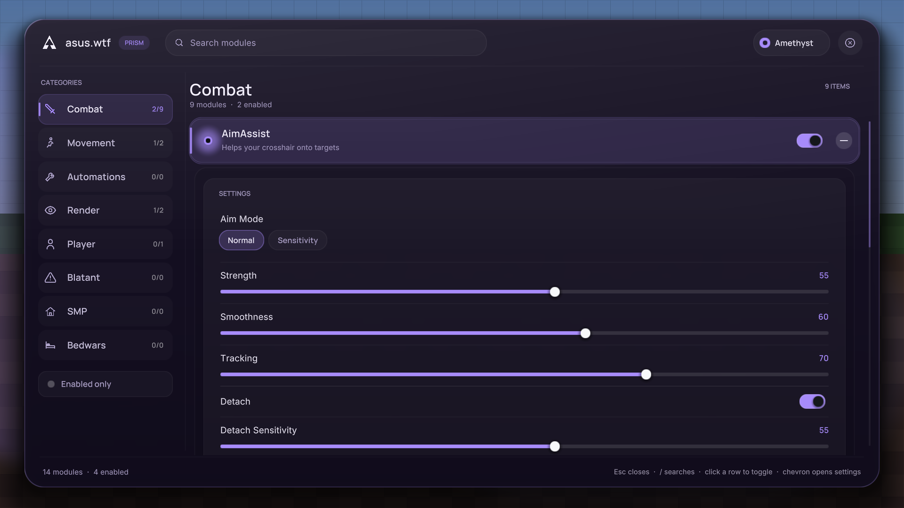

Layout 01
Prism
One pane. A category column down the left, an accordion list on the right. Click a row to toggle it, click the plus to unfold that module's settings right underneath it — no side panels, no overlapping windows, nothing covering the list.
- Inline settings with sliders, modes, colours and keybinds
- Fuzzy search across every category with /
- Scroll wheel on the category column flips categories